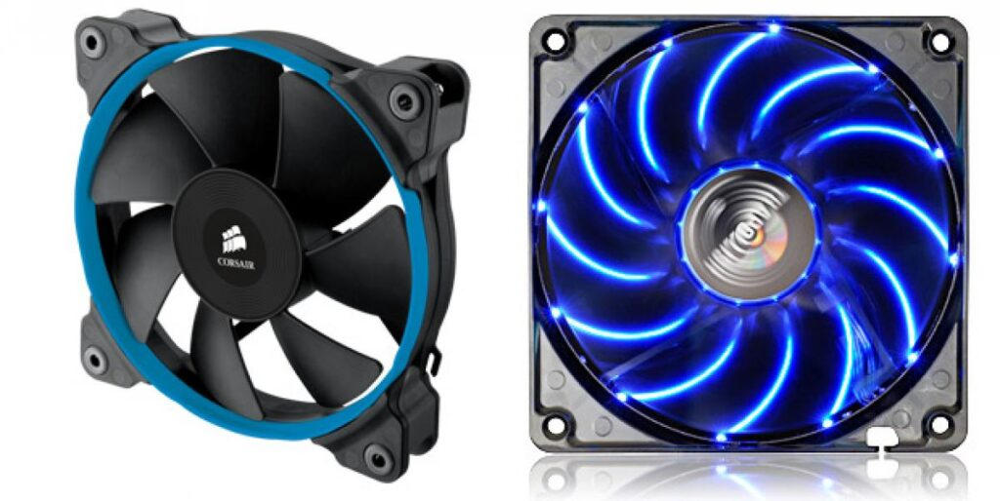

Analisis de Problemas
Sintoma: Rendimiento Lento por Sobrecalentamiento
Tu computadora o laptop se vuelve lenta y presenta "lag" al ejecutar tareas exigentes como juegos o edicion de video. Esto es el "thermal throttling", donde los componentes reducen su velocidad para evitar daños por calor.
Soluciones y Recomendaciones:
- Limpieza de Polvo: El polvo acumulado en los disipadores y ventiladores es la causa mas comun. Usa aire comprimido para limpiar a fondo las rejillas de ventilacion y las aspas de los ventiladores del CPU, GPU y chasis.
- Monitorizar Temperaturas: Utiliza software como HWMonitor, Speccy o MSI Afterburner (para GPU) para comprobar las temperaturas del CPU y GPU bajo carga. Esto te ayudara a identificar si el sobrecalentamiento es el problema.
- Mejorar Flujo de Aire: Asegurate de que las entradas y salidas de aire del gabinete no esten obstruidas. Considera mejorar la configuracion de los ventiladores del chasis para optimizar el flujo de aire interno.
- Ambiente Fresco: Evita usar la laptop sobre superficies blandas (camas, alfombras) que bloquean la ventilacion. Usa una base refrigeradora si es una laptop.

Sintoma: Ruido Excesivo o Ventiladores que No Giran
Los ventiladores hacen un ruido fuerte y constante, un zumbido, un chirrido, o notas que algunos ventiladores (CPU, GPU, chasis) no estan girando en absoluto.
Soluciones y Recomendaciones:
- Inspeccion Visual: Abre el gabinete y observa si algun ventilador esta atascado por un cable, suciedad o si las aspas estan rotas.
- Lubricacion (solo si es viable): Algunos ventiladores ruidosos pueden beneficiarse de una gota muy pequeña de aceite lubricante para rodamientos (no WD-40) en el centro del eje, si es accesible. Esto es una solucion temporal.
- Reemplazo del Ventilador: Si un ventilador hace mucho ruido, esta atascado o directamente no gira, lo mas efectivo es reemplazarlo por uno nuevo.
- Ajustar Velocidad de Ventiladores: En la BIOS/UEFI o con software como FanControl, puedes ajustar la curva de velocidad de los ventiladores para que sean mas silenciosos en tareas ligeras.
Sintoma: La PC se Apaga o Reinicia Repentinamente
Tu computadora se apaga de golpe sin previo aviso, especialmente durante juegos o programas pesados. Esto es un mecanismo de seguridad para proteger los componentes de daños permanentes por temperaturas criticas.
Soluciones y Recomendaciones:
- Verificar Disipador de CPU: Asegurate de que el disipador del CPU esta correctamente anclado y haciendo buen contacto con el procesador. Un montaje flojo es una causa comun de sobrecalentamiento rapido.
- Reaplicar Pasta Termica: La pasta termica entre el CPU/GPU y su disipador se seca con el tiempo, perdiendo su eficiencia. Retira la pasta vieja con alcohol isopropolico y aplica una nueva capa del tamaño de un guisante.
- Revisar Bomba (Refrigeracion Liquida): Si usas un sistema de refrigeracion liquida (AIO), verifica si la bomba esta funcionando (normalmente sentiras una leve vibracion o escucharas un zumbido). Una bomba fallida es una causa de sobrecalentamiento extremo.
- Considerar un Upgrade de Refrigeracion: Si tu CPU o GPU son de gama alta o si haces overclocking, el disipador de stock podra no ser suficiente. Un disipador de torre mas grande o un sistema de refrigeracion liquida puede ser necesario.